Fault-Conditioned UAV World Modeling for State Prediction and Contingency Decision Support
Memory-Augmented Structured World Model
Research manuscript
MAS–WMFault-conditioned dynamics · Memory-enhanced inference · Prior prediction
State prediction and contingency decision support under specified fault conditions
Mechanism and Demonstration
From real flight to measured prediction gains—and what those predictions mean for response assessment.
Richer inference is useful only if its benefits persist into prediction. MAS-WM improves observed-state reconstruction and trains a prior that remains effective after future measurements and memory retrieval become unavailable.
Method: enrich inference, strengthen prediction
Memory informs the present. The reference target helps predict what follows. Both posteriors share parameters and train the same prior; the reference target omits the current retrieval residual.
Refine the current state
Flight observations, fault conditions, and retrieved transitions enrich posterior inference.
Train with two targets
The augmented and reference posteriors jointly regularize one predictive prior.
Roll forward without retrieval
Candidate modes condition future states, rewards, and continuation signals.
Explore the complete framework and inference network · Figures 1–2
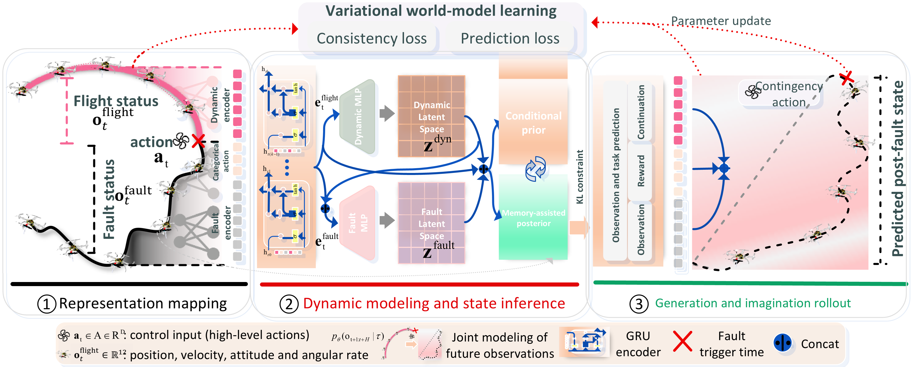
Fault-conditioned input. The flight observation contains position, velocity, Euler angles, and angular rates. Fault type and severity are supplied separately. A candidate mode selects Continue, Hover, Land, or Return; low-level regulation remains with the existing flight controller. Each short prediction horizon uses a locally fixed fault condition.
One inference network, two posterior targets
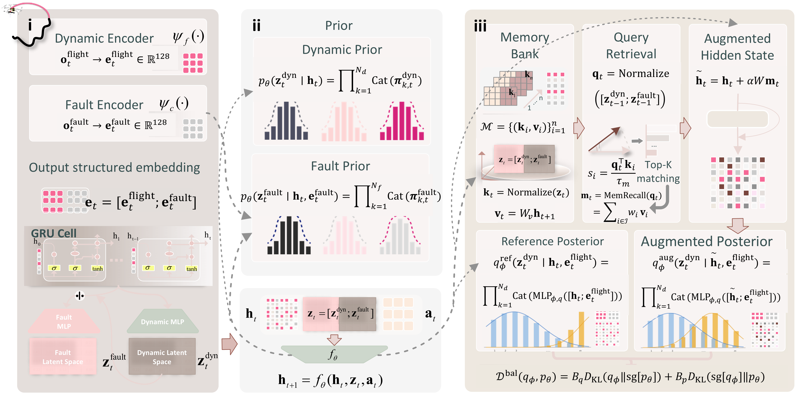
ObservationMeasurements + retrieved transitionsAugmented posterior estimates the observed state.
ImaginationInitialized state + candidate modesThe learned prior propagates without future observations or retrieval.
Result 1: State inference and prior prediction
The key result appears after retrieval stops. Memory alone improves reconstruction, but its fifteen-step position error remains close to the unaugmented model. Adding the reference target reduces it from 0.2585 m to 0.2227 m.
Inspect all reconstruction and prediction comparisons · Tables I–II and Figures 3–4
RQ1 — Does the learning objective improve state inference and subsequent prediction? Capacity-matched experiments separate the effect of retrieved context from the reference-posterior target. The model without reference KL already reconstructs observed states more accurately; the full objective further improves reconstruction and multi-step rollout.
Capacity-matched reconstruction · Selected state metrics from Table II
| Configuration | Position RMSE (m) ↓ | Velocity RMSE (m/s) ↓ | Attitude error (°) ↓ |
|---|---|---|---|
| Without memory and reference KL | 0.3008 | 0.3370 | 3.3605 |
| Memory only (without reference KL) | 0.2772 | 0.3104 | 3.1484 |
| Without memory (reference KL control) | 0.2807 | 0.3275 | 3.0402 |
| MAS-WM | 0.2431 | 0.2909 | 2.9533 |
All configurations have 11,495,952 parameters and 5,767,168 memory elements, with common data, training seed, batch/sequence sizes, update count, and fifty evaluation episodes. With zero memory residual, the two posterior targets coincide; the reference-target contribution is assessed by comparing memory only with MAS-WM.
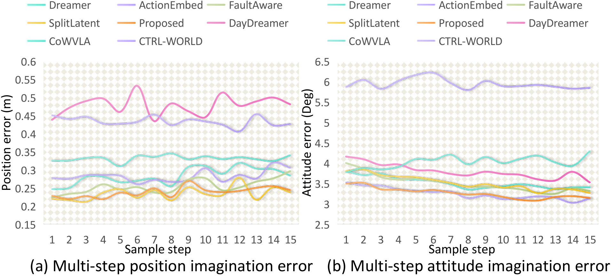
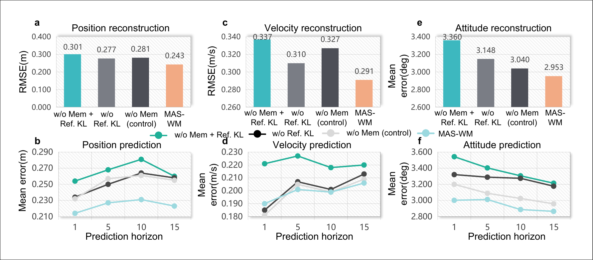
Prediction after retrieval stops · 15-step position error in Figure 4
| Configuration | Position error (m) ↓ |
|---|---|
| Without memory and reference KL | 0.2600 |
| Memory only | 0.2585 |
| MAS-WM | 0.2227 |
Retrieval improves observed-state inference, while reference regularization strengthens subsequent prediction. At fifteen steps, memory alone gives limited position-prediction improvement despite better reconstruction. Adding the reference target reduces the error to 0.2227 m. Gains depend on state component and horizon; memory alone is slightly better in one-step velocity prediction.
Baseline reconstruction and task-signal results · Table I
State reconstruction and task-signal prediction
| Model | Position RMSE (m) | Velocity RMSE (m/s) | Attitude error (°) | Reward MAE | Reward RMSE | KL | AUC | Recon. L2 |
|---|---|---|---|---|---|---|---|---|
| DreamerV3 | 0.2891 | 0.3398 | 3.2944 | 0.0359 | 0.0653 | 0.2083 | 0.9457 | 0.4586 |
| CoWVLA | 0.3102 | 0.2906 | 3.1124 | 0.0354 | 0.0660 | 0.6069 | 0.9332 | 0.4282 |
| DayDreamer | 0.4058 | 0.3486 | 3.5363 | 3.5166 | 3.6288 | 0.1728 | 0.9132 | 0.5396 |
| CTRL-WORLD | 1.0875 | 0.6581 | 6.0955 | 0.0487 | 0.0844 | 0.5935 | 0.5494 | 0.8576 |
| LoGeR | 9.0885 | 1.1945 | 21.3121 | — | — | — | — | — |
| RISE | 0.1346 | 0.4081 | 16.3068 | — | — | — | — | 1.3184 |
| MAS-WM | 0.2431 | 0.2909 | 2.9533 | 0.0294 | 0.0556 | 0.2706 | 0.9638 | 0.3841 |
Recurrent baseline state results are posterior reconstructions over fifty episodes. Position and velocity use vector RMSE; attitude uses mean Euclidean error; reconstruction L2 is the mean observation-residual norm. AUC measures continuation-label discrimination. Baselines with different output structures retain their reported estimates. Lower error is better; higher AUC is better. KL is not ranked as an error metric.
Memory sensitivity: stability and component trade-offs
Stable position prediction across retrieval settings. Changing capacity, neighbor count, and temperature keeps the tested position RMSE within 0.1514–0.1569 m. Residual strength governs the more visible position–attitude trade-off.
Inspect the complete sensitivity study · Figure 5
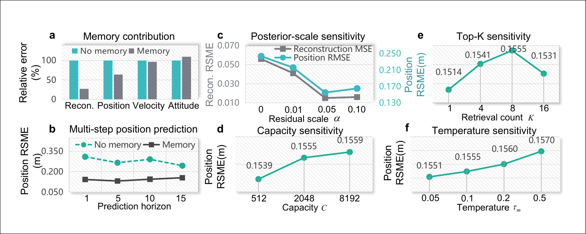
Across the tested C, K, and τ settings, fifteen-step position RMSE remains within 0.1514–0.1569 m, below the 0.2436 m no-memory baseline in this sensitivity experiment. Residual strength has a stronger effect on component-wise trade-offs: the default favors position accuracy, while attitude error increases relative to no memory. These fixed-weight results characterize retrieval behavior separately from the trained-model ablation above.
Result 2: Predicting motion under specified faults
Predict the motion associated with the supplied fault. Two-second prior rollouts examine motor, accelerometer, and gyroscope conditions. Spatial paths and state traces test whether useful motion information persists after observation updates cease.
Inspect fault-conditioned trajectories and severity comparisons · Table III and Figures 6–7
RQ2 — Do conditional dynamics retain the relationship between supplied faults and motion? Forty-step prior rollouts predict position, velocity, and attitude under motor, accelerometer, and gyroscope faults. Thirty observed steps initialize each rollout; at nominal 20 Hz, the prediction horizon is two seconds.
MAS-WM fault-conditioned prediction · Table III
| Supplied fault | Position error (m) | Velocity error (m/s) | Attitude error (rad) |
|---|---|---|---|
| Motor | 0.1328 | 0.0502 | 0.0138 |
| Accelerometer | 0.0593 | 0.0899 | 0.0185 |
| Gyroscope | 0.2645 | 0.1903 | 0.0190 |
| Average | 0.1522 | 0.1101 | 0.0171 |
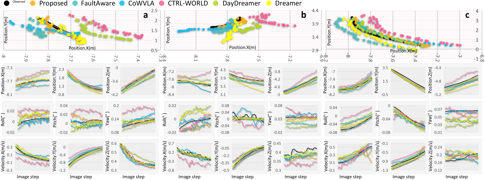
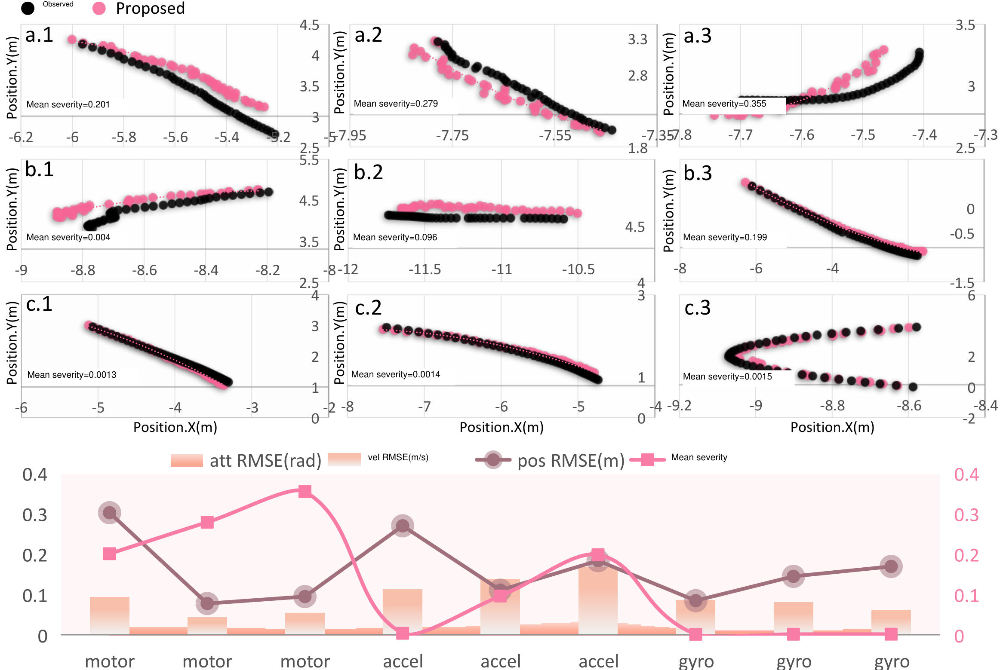
The trajectory shapes and component traces examine more than average error: they show whether fault-conditioned rollouts preserve the evolution of motion after observation updates cease. MAS-WM retains useful position and attitude information across the tested conditions. Relative performance varies by component and fault; for example, DayDreamer has a slightly lower gyroscope-case position error (0.2612 versus 0.2645 m).
Downstream application: prediction-based mode appraisal
Response probabilities are a starting point; motion consequences complete the picture. The downstream actor-critic evaluates Continue, Hover, Land, and Return. The replay below shows why task retention and maneuver demands matter when interpreting those preferences.
Inspect mode distributions and state-dependent appraisal · Figure 8
RQ3 — How can predicted states and task signals support contingency appraisal? An imagination-trained actor-critic evaluates Continue, Hover, Land, and Return using predicted rewards and continuation. The application connects the learned dynamics to response preferences; physical consequences are examined separately below.
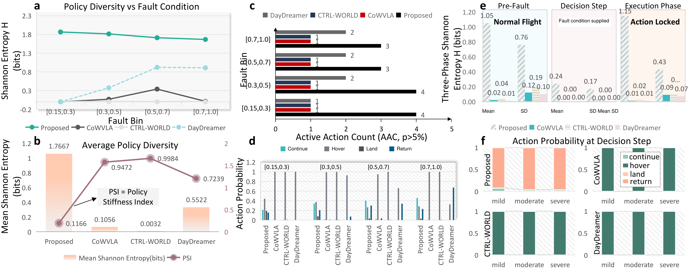
MAS-WM maintains probability across multiple modes, with entropy decreasing and the active action count falling from four to three as severity increases. CoWVLA and CTRL-WORLD favor hover, while DayDreamer shifts toward return in the highest severity bin. These distributions reveal how the specified learning objective represents alternatives; their physical implications depend on task retention and maneuver demands.
Controlled responses: task retention and maneuver demands
Watch the same candidate modes produce different motion. These logged simulation branches show horizontal paths and altitude after a motor fault. Switch the condition to see how the response consequences change.
Continuing can remain feasible
Across six mild/moderate scenarios, Continue retains 0.738–1.000 of the nominal task score.
Intervention has motion costs
Return needs reorientation and translation. Its attitude excursions can exceed those of Hover.
Available modes can be insufficient
All four modes crash in the three severe scenarios, motivating explicit predicted-consequence constraints.
Inspect all nine scenarios and aggregate outcomes · Table V and Figure 9
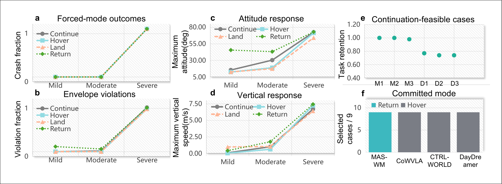
Controlled response findings · Table V and Figure 9
| Comparison | Observed result |
|---|---|
| Six mild/moderate cases: Continue | Task retention 0.738–1.000; no crashes; violation fraction ≤ 0.02 |
| MAS-WM selected branch | Return; mean violation fraction 0.358 across nine scenarios |
| Baseline selected branches | Hover; mean violation fraction 0.296 across nine scenarios |
| Three severe cases | All four forced modes crash |
Learned response preference and residual task capability can diverge. In the six mild/moderate cases, continuing preserves feasible task progress, while selected return or hover interrupts it. Return also requires reorientation and translation, producing larger attitude excursions. The comparison exposes why intervention preference alone cannot characterize response quality under degraded actuation.
Joint position, attitude, and velocity predictions offer a basis for assessing these consequences. Incorporating mode-conditioned retention and exceedance estimates into constrained selection could complement reward maximization, explicitly accounting for both task feasibility and motion costs.
Physical flights: state inference and response evolution
Watch the world model feed response appraisal. View physical flight alongside the world-model log. The response progresses from fault detection to mode selection and action locking; the selected mode then remains fixed while state inference continues.
Physical flight
Camera recording · original speed · independent playback
One choice, then a fixed response
- Fault detectedThe fault condition initiates response selection.
- Mode selectedA high-level response is chosen.
- Action lockedThe chosen mode stays fixed; world-model state inference continues.
World model and locked response
View the four original recordings
Accelerometer · Continue
Task flight under the mild accelerometer condition.
Download clip ↘Accelerometer · Return
Return maneuver under the severe accelerometer condition.
Download clip ↘Motor · Continue
Task continuation under motor degradation.
Download clip ↘Motor · Return
Return maneuver under stronger motor degradation.
Download clip ↘Motion, model fit, and mode values provide complementary information. In the recorded trials, mode values continue to evolve after the command is fixed. Reconstruction mismatch can increase while policy entropy either rises or falls—showing why a concentrated action distribution alone cannot describe the flight response.
Inspect flight-state records, all eight trials, and model diagnostics · Figures 10–12 and Tables VI–VII
State-dependent appraisal during physical execution. Eight FS-J150 trials examine accelerometer and motor perturbations. World-model inference and policy computation run on a Windows host with an NVIDIA RTX 3080, communicating with PX4 through UDP MAVLink. Flight-specific model/policy parameters and severity-dependent guidance are used; PX4 provides low-level stabilization.
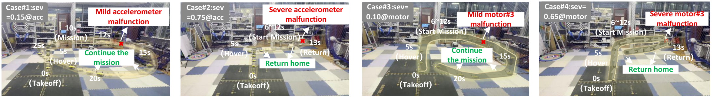
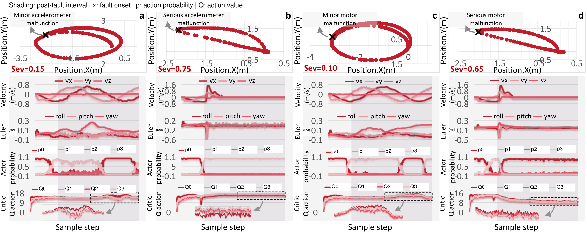
Eight-trial flight inventory · Table VI
| Trial | Condition | Mode | Peak roll (°) | Peak pitch (°) | Peak |vz| (m/s) | Latency (ms) |
|---|---|---|---|---|---|---|
| T01 | Accel. 0.15 | Continue | 9.29 | 3.66 | 0.048 | 58.32 |
| T02 | Accel. 0.15 | Continue | 11.86 | 3.82 | 0.056 | 59.92 |
| T03 | Accel. 0.15 | Continue | 5.89 | 3.58 | 0.049 | 60.37 |
| T04 | Accel. 0.75 | Return | 14.31 | 29.17 | 0.254 | 61.26 |
| T05 | Accel. 0.75 | Return | 17.09 | 34.99 | 0.340 | 62.97 |
| T06 | Motor 0.10 | Continue | 5.40 | 2.65 | 0.107 | 61.36 |
| T07 | Motor 0.65 | Return | 21.23 | 22.81 | 0.512 | 60.33 |
| T08 | Motor 0.65 | Return | 25.76 | 39.23 | 0.480 | 57.67 |
Each analysis window contains 300 samples at nominal 20 Hz (15 s). Latency spans software fault-flag detection to final mode selection, including environment, posterior, and selection processing. Motion values are absolute window peaks.
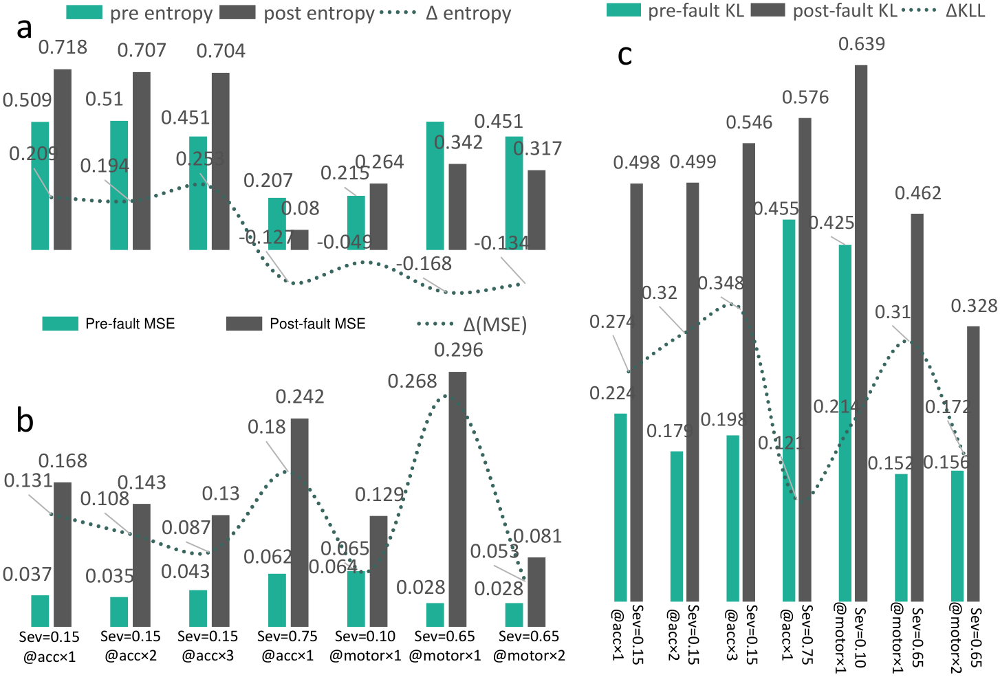
Reconstruction MSE and posterior–prior KL increase after every fault in the diagnostic subset, while entropy can either rise or fall. Average motion deviations can also conceal pronounced transients: T08 reaches a pitch peak of 39.23° despite a post-fault mean of 3.87°. State trajectories, reconstruction residuals, and mode values therefore provide complementary information about evolving responses.
The deployed model supports continued state-dependent appraisal during fault-affected flight. Fault inputs specify conditions, observations update the inferred state, and predicted task signals inform evolving mode values. No crashes occur in these eight 15-second records. Together with the controlled response comparisons, these observations motivate future integration of diagnosis, consequence prediction, and safety-oriented selection.